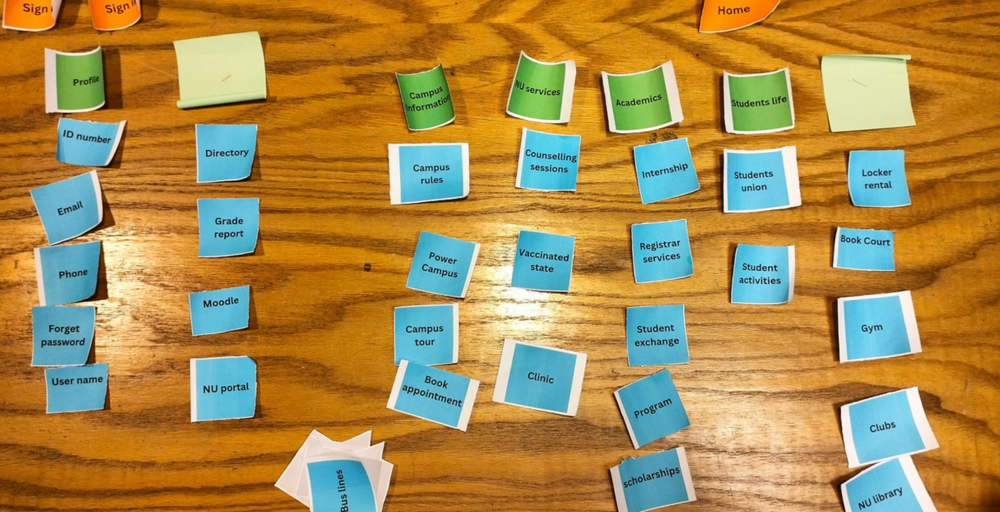
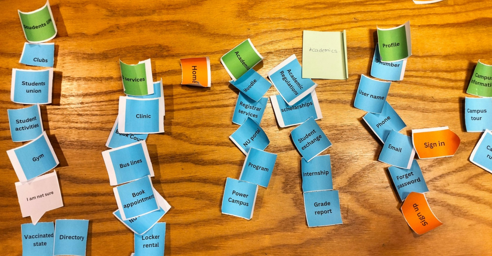
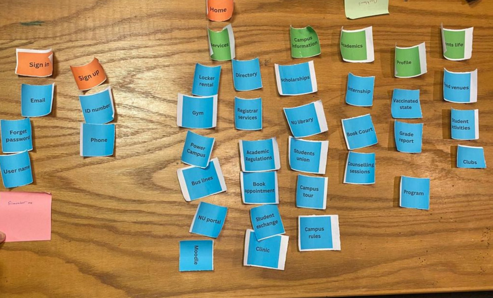
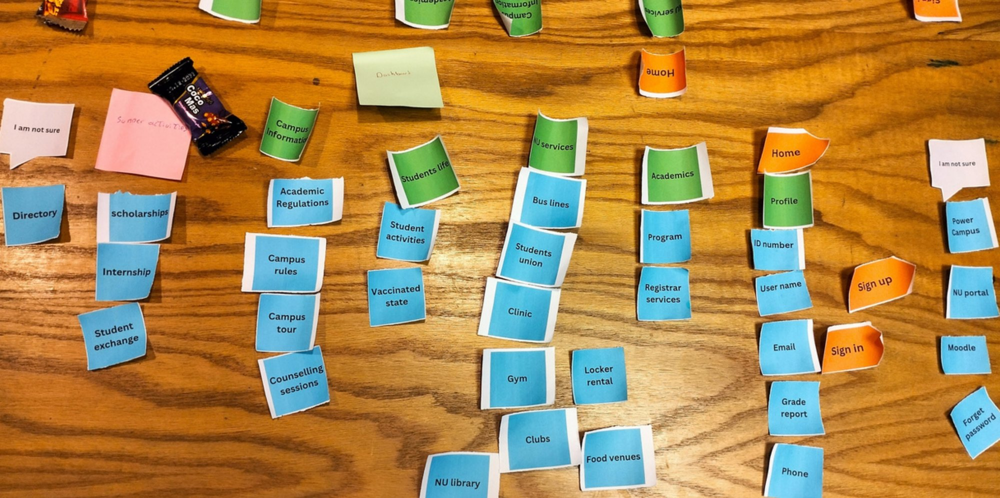
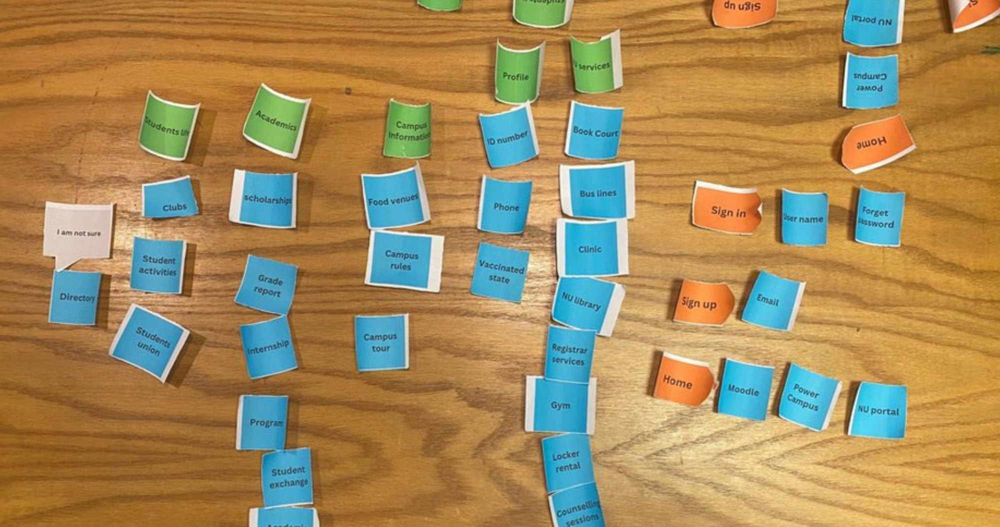
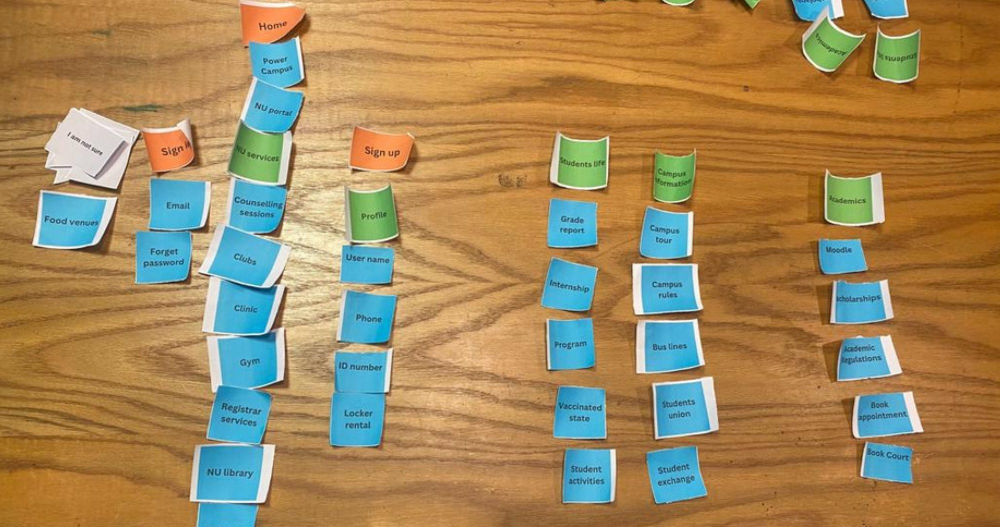
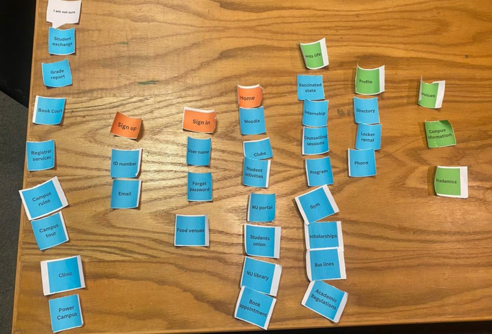
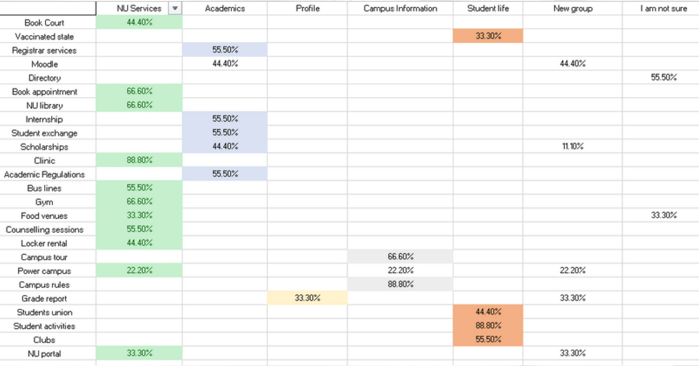

The challenge — An app organised the way students think
We were redesigning the NU App for the university's students. Before drawing screens, we wanted to understand the students' mental model: which sections they expect, what belongs together, and what the current menus get wrong.
The answer would decide the app's information architecture: the groups on the home screen and what sits inside each one.

Goals & questions — What we needed to learn
Three goals: learn how students prioritise and rank information inside the existing categories, find the categories that mislead them, and collect ideas for better labels.
- What main categories and subcategories do students use when they organise and look for information?
- How do students prioritise and group the app's sections?
- Are there information gaps, or categories that repeat each other?
- Where is the current information architecture inconsistent?
The method — Hybrid card sorting, on a table
Each session had two rounds. In the open round, students grouped the item cards however made sense to them and could add cards for anything missing. In the closed round, they placed the items under the app's group names, used an "I am not sure" card when a label did not fit, and could name a new group of their own.
Open sorting gave us new names and groupings; closed sorting showed which existing categories mislead people and how students rank what is inside them.
The sessions — Different majors, years, and app habits
We recruited across majors and academic years, two or three students from each, and balanced students who already used the app with students who had never opened it. Every session started with the same script and ended with a small thank-you gift.






Analysis — Where each card landed
We counted where every card was placed across nine sorts, turned the counts into percentages, and marked each card's strongest group. The bars show how strongly students agreed on what each group should hold.

Results — The current structure only half works
We set two measures before the sessions. Accuracy compares each student's structure with the app's current one; consistency checks how far students agree with each other. Low accuracy with high consistency means students share a clear model, and it is not the one the app uses.
Friction — Two groups students did not recognise
Two sets of cards kept moving between groups or ended up on the "I am not sure" pile. These are the labels the redesign had to fix first.
The new IA — Seven groups, in the students' own words
The recommendation keeps the groups students agreed on, slims down Academics and Profile, and adds two groups the sessions asked for: Summer activities, a name one participant wrote on a blank card, and LearnSync, for the learning tools students kept putting together.
What students asked for — Beyond the cards
Three requests came up in the sessions and went straight into the redesign backlog.
- 01Dark mode
- 02A physical therapy service
- 03"Remember me" at sign-in